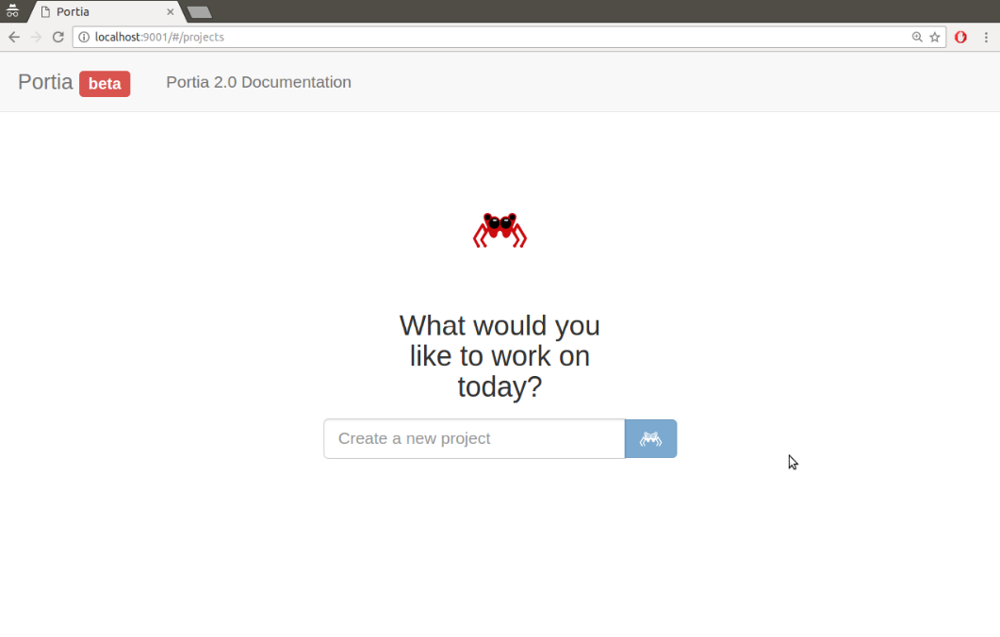
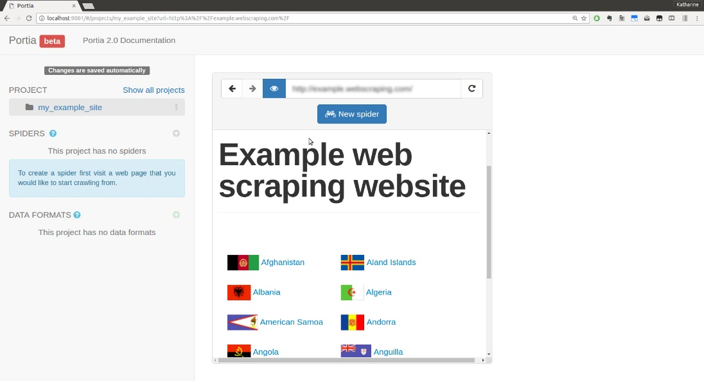
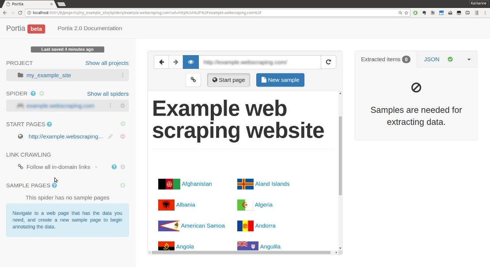
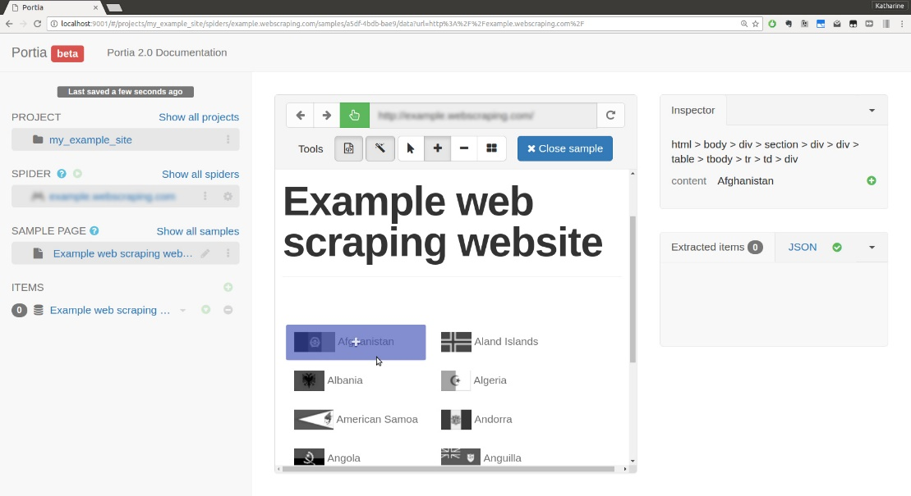
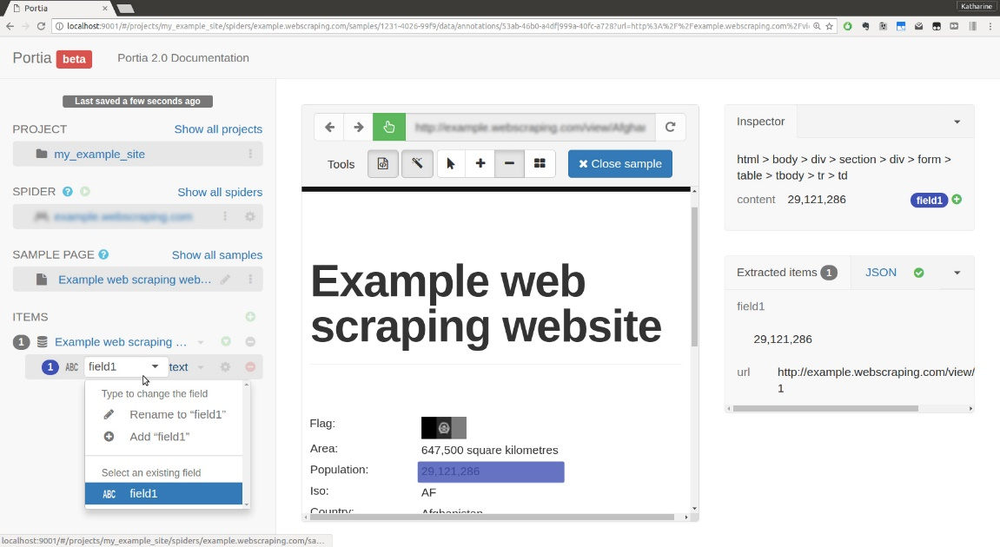
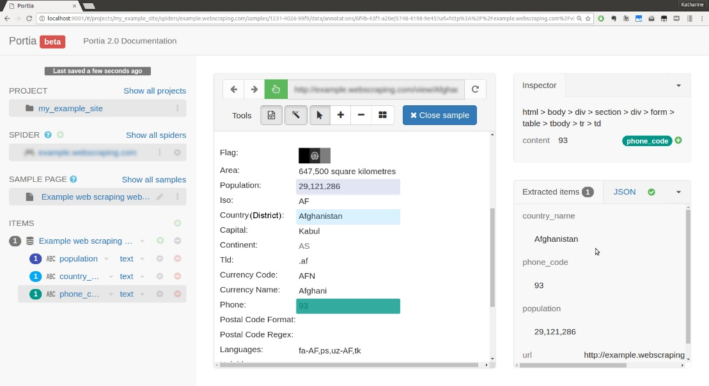
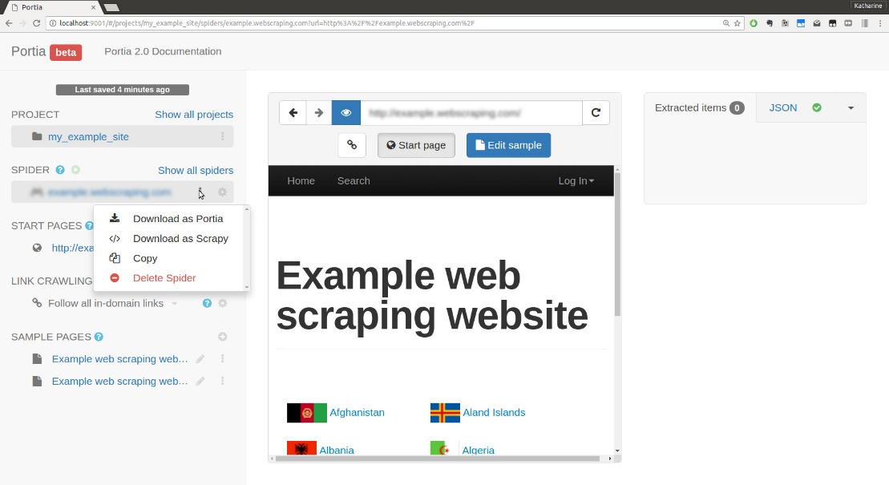

要了解上述命令或其他命令的详细信息，可以参考http://doc.scrapy. org/en/latest/topics/commands.html。
Scrapy是一个流行的网络爬虫框架，它使用了一些高级功能以简化网站抓取。本章中，我们将学习使用Scrapy抓取示例网站，目标任务与第2章相同。然后，我们还会介绍Portia，这是一个基于Scrapy的应用，允许用户通过点击界面抓取网站。
在本章中，我们将会介绍如下主题：
我们可以使用pip命令安装Scrapy，如下所示。
pip install scrapy由于Scrapy依赖一些外部库，因此如果在安装过程中遇到困难的话，可以从其官方网站上获取到更多信息，网址为http://doc.scrapy.org/en/latest/intro/install.html。
如果Scrapy安装成功，就可以在终端里执行scrapy命令了。
$ scrapy
Scrapy 1.3.3 - no active project
Usage:
scrapy <command> [options] [args]
Available commands:
bench Run quick benchmark test
commands
fetch Fetch a URL using the Scrapy downloader
...本章中我们将会使用如下几个命令。
startproject：创建一个新项目。genspider：根据模板生成一个新爬虫。crawl：执行爬虫。shell：启动交互式抓取控制台。
要了解上述命令或其他命令的详细信息，可以参考
http://doc.scrapy. org/en/latest/topics/commands.html。
安装好Scrapy以后，我们可以运行startproject命令生成第一个Scrapy项目的默认结构。
具体的操作步骤为：打开终端进入想要存储Scrapy项目的目录，然后运行scrapy startproject < project name>。这里我们使用example作为项目名。
$ scrapy startproject example
$ cd example下面是scrapy命令生成的文件结构。
scrapy.cfg
example/
__init__.py
items.py
middlewares.py
pipelines.py
settings.py
spiders/
__init__.py其中，在本章（以及一般的Scrapy使用）中比较重要的几个文件如下所示。
items.py：该文件定义了待抓取域的模型。settings.py：该文件定义了一些设置，如用户代理、爬取延时等。spiders/：该目录存储实际的爬虫代码。另外，Scrapy使用scrapy.cfg设置项目配置，pipelines.py处理要抓取的域，middlewares.py控制请求和响应中间件，不过在本例中无须修改这几个文件。
默认情况下，example/items.py文件包含如下代码。
# -*- coding: utf-8 -*-
# Define here the models for your scraped items
#
# See documentation in:
# http://doc.scrapy.org/en/latest/topics/items.html
import scrapy
class ExampleItem(scrapy.Item):
# define the fields for your item here like:
# name = scrapy.Field()
passExampleItem类是一个模板，需要将其中的内容替换为我们希望从示例国家（或地区）页面中抽取到的信息。对于目前来说，我们只会抓取国家（或地区）名称和人口数量，而不是抓取国家（或地区）的所有信息。下面是修改后支持该功能的模型代码。
class CountryOrDistrictItem(scrapy.Item):
name = scrapy.Field()
population = scrapy.Field()

定义item的详细文档可以参考
http://doc.scrapy.org/en/latest/topics/items.html。
现在，我们要开始编写真正的爬虫代码了，在Scrapy里又被称为spider。通过genspider命令，传入爬虫名、域名以及可选的模板参数，就可以生成初始模板。
$ scrapy genspider country_or_district example.python-scraping.com --template= crawl我们使用了内置的crawl模板，以利用Scrapy库的CrawlSpider。相对于简单的抓取爬虫来说，Scrapy的CrawlSpider拥有一些网络爬取时可用的特殊属性和方法。
运行genspider命令之后，下面的代码将会在example/spiders/country_or_district.py中自动生成。
# -*- coding: utf-8 -*-
import scrapy
from scrapy.linkextractors import LinkExtractor
from scrapy.spiders import CrawlSpider, Rule
class CountryOrDistrictSpider(CrawlSpider):
name = 'country_or_district'
allowed_domains = ['example.python-scraping.com']
start_urls = ['http://example.python-scraping.com']
rules = (
Rule(LinkExtractor(allow=r'Items/'), callback='parse_item',
follow=True),
)
def parse_item(self, response):
i = {}
#i['domain_id'] =
response.xpath('//input[@id="sid"]/@value').extract()
#i['name'] = response.xpath('//div[@id="name"]').extract()
#i['description'] =
response.xpath('//div[@id="description"]').extract()
return i最开始几行导入了后面会用到的Scrapy库以及编码定义。然后创建了一个爬虫类，该类包括如下类属性。
name：识别爬虫的字符串。allowed_domains：可以爬取的域名列表。如果没有设置该属性，则表示可以爬取任何域名。start_urls：爬虫起始URL列表。rules：该属性为一个通过正则表达式定义的Rule对象元组，用于告知爬虫需要跟踪哪些链接以及哪些链接包含待抓取的有用内容。你会发现定义的Rule中包含一个callback属性，该回调被设置为下面定义的parse_item。该方法是CrawlSpider对象的主要数据抽取方法，并且该方法生成的Scrapy代码中包含从页面中抽取内容的示例。
由于Scrapy是一个高级框架，因此即使只有这几行代码，也还有很多需要了解的知识。官方文档中包含了创建爬虫相关的更多细节，其网址为http://doc.scrapy.org/en/latest/topics/spiders.html。
在运行前面生成的爬虫之前，需要更新Scrapy的设置，避免爬虫被封禁。默认情况下，Scrapy对同一域名允许最多16个并发下载，并且两次下载之间没有延时，这样就会比真实用户浏览时的速度快很多。该行为很容易被服务器检测到并阻止。
在第1章中提到，当下载速度持续高于每秒一个请求时，我们抓取的示例网站会暂时封禁爬虫，也就是说使用默认配置会造成我们的爬虫被封禁。除非你在本地运行示例网站，否则我建议在example/settings.py文件中添加如下几行代码，使爬虫同时只能对每个域名发起一个请求，并且每两次请求之间存在合理的5秒延时。
CONCURRENT_REQUESTS_PER_DOMAIN = 1
DOWNLOAD_DELAY = 5你也可以在文档中搜索到这些设置，使用上面的值进行修改并取消注释。请注意，Scrapy在两次请求之间的延时并不是精确的，这是因为精确的延时同样会造成爬虫容易被检测到，然后被封禁。而Scrapy实际使用的方法是在两次请求之间的延时上添加随机的偏移量。

要想了解关于上述设置和其他可用设置的更多细节，可以参考
http://doc.scrapy.org/en/latest/topics/settings.html。
想要从命令行运行爬虫，需要使用crawl命令，并且带上爬虫的名称。
$ scrapy crawl country_or_district -s LOG_LEVEL=ERROR
$脚本运行后，完全没有输出。你会注意到命令中有一个-s LOG_LEVEL=ERROR标记，这是一个Scrapy设置，等同于在settings.py文件中定义LOG_LEVEL = 'ERROR'。默认情况下，Scrapy会在终端上输出所有日志信息，而这里是将日志级别提升至只显示错误信息。
为了真正抓取页面上的一些内容，我们需要在爬虫文件中添加几行代码。为了确保我们可以启动构建并且抽取item，我们必须先从使用CountryItem开始，并更新爬取规则。下面是更新后的爬虫版本。
from example.items import CountryOrDistrictItem
...
rules = (
Rule(LinkExtractor(allow=r'/index/'), follow=True),
Rule(LinkExtractor(allow=r'/view/'), callback='parse_item')
)
def parse_item():
i = CountryOrDistrictItem ()
...为了抽取结构化数据，需要使用我们创建的CountryOrDistrictItem类。在新添加的代码中，我们引入该类，并在parse_item方法中实例化了一个对象i（或item）。
此外，我们还需要添加规则，以便我们的爬虫可以找到数据并对其进行抽取。默认规则为搜索url模式r'/Items'，这与我们的示例站点并不匹配。我们可以根据对站点的已知信息，创建两条新规则来替代默认规则。第一条规则爬取索引页并跟踪其中的链接，而第二条规则爬取国家（或地区）页面并将下载响应传给callback函数用于抓取。
下面让我们把日志级别设为DEBUG以显示更多的爬取信息，来看一下这个改进后的爬虫是如何运行的。
$ scrapy crawl country_or_district -s LOG_LEVEL=DEBUG
...
2017-03-24 11:52:42 [scrapy.core.engine] DEBUG: Crawled (200) <GET
http://example.python-scraping.com/view/Belize-23> (referer:
http://example.python-scraping.com/index/2)
2017-03-24 11:52:49 [scrapy.core.engine] DEBUG: Crawled (200) <GET
http://example.python-scraping.com/view/Belgium-22> (referer:
http://example.python-scraping.com/index/2)
2017-03-24 11:52:53 [scrapy.extensions.logstats] INFO: Crawled 40 pages (at
10 pages/min), scraped 0 items (at 0 items/min)
2017-03-24 11:52:56 [scrapy.core.engine] DEBUG: Crawled (200) <GET
http://example.python-scraping.com/user/login?_next=%2Findex%2F0> (referer:
http://example.python-scraping.com/index/0)
2017-03-24 11:53:03 [scrapy.core.engine] DEBUG: Crawled (200) <GET
http://example.python-scraping.com/user/register?_next=%2Findex%2F0> (referer:
http://example.python-scraping.com/index/0)
...输出的日志信息显示，索引页和国家（或地区）页都可以正确爬取，并且已经过滤了重复链接。我们还可以看到，在首次启动爬取时，我们已安装的中间件以及其他重要信息的输出。
不过，我们还会发现爬虫浪费了很多资源来爬取每个网页上的登录和注册表单链接，因为它们也匹配rules里的正则表达式。前面命令中的登录URL以_next=%2Findex%2F1结尾，也就是_next=/index/1经过URL编码后的结果，定义了登录后重定向的地址。要想避免爬取这些URL，我们可以使用规则的deny参数，该参数同样需要一个正则表达式，用于匹配每个不想爬取的URL。
下面对之前的代码进行了修改，通过避免URL包含/user/来防止爬取用户登录和注册表单。
rules = (
Rule(LinkExtractor(allow=r'/index/', deny=r'/user/'), follow=True),
Rule(LinkExtractor(allow=r'/view/', deny=r'/user/'),
callback='parse_item')
)

想要进一步了解如何使用
LinkExtractor类，可以参考其文档，网址为http://doc.scrapy.org/en/latest/topics/linkextractors.html。
要想停止当前爬取，并使用新的代码重新开始，你可以使用Ctrl + C或cmd + C发送一个退出信号。之后，你将会看到类似如下所示的信息。
2017-03-24 11:56:03 [scrapy.crawler] INFO: Received SIG_SETMASK, shutting
down gracefully. Send again to force它将完成队列中的请求，然后停止。你将会在结尾处看到一些额外的统计和调试信息，我们将在本节后面的部分对其进行介绍。

除了为爬虫添加拒绝规则外，你还可以对
Rule对象使用process_links参数。它将允许你创建一个可以迭代所有可发现链接并进行任意修改的函数（比如移除或添加查询字符串的部分）。关于爬取规则的更多信息，可以查阅文档，地址为https://doc.scrapy.org/en/latest/topics/spiders.html#crawling-rules。
在这个Scrapy的例子中，我们使用了Scrapy的CrawlSpider，它在爬取一个或一系列网站时非常有用。Scrapy还有其他几种爬虫，根据网站和想要抽取的内容不同，你可能也会使用到它们。这些爬虫属于如下几个类别。
Spider：普通的抓取爬虫。通常只用于抓取一个类型的页面。CrawlSpider：爬取爬虫。通常用于遍历域名，并从它通过爬取链接发现的页面中抓取一个（或几个）类型的页面。XMLFeedSpider：遍历XML流并从每个节点中抽取内容的爬虫。CSVFeedSpider：与XML爬虫类似，不过此处是解析输出中的CSV行。SitemapSpider：该爬虫通过先解析站点地图，使用不同的规则爬取网站。这些爬虫都包含在Scrapy的默认安装当中，因此无论何时你想要构建一个新的网络爬虫时，都可以使用它们。在本章中，我们将完成构建第一个爬取爬虫，作为如何使用Scrapy工具的示例。
现在Scrapy已经可以爬取国家（或地区）页面了，下面还需要定义要抓取哪些数据。为了帮助测试如何从网页中抽取数据，Scrapy提供了一个很方便的命令——shell，可以通过Python或IPython解释器向我们展示Scrapy的API。
我们可以使用想要作为起始的URL调用命令，如下所示。
$ scrapy shell http://example.python-scraping.com/view/United-Kingdom-239
...
[s] Available Scrapy objects:
[s] scrapy scrapy module (contains scrapy.Request, scrapy.Selector,
etc)
[s] crawler <scrapy.crawler.Crawler object at 0x7fd18a669cc0>
[s] item {}
[s] request <GET http://example.python-scraping.com/view/United-Kingdom-239>
[s] response <200 http://example.python-scraping.com/view/United-Kingdom-239>
[s] settings <scrapy.settings.Settings object at 0x7fd189655940>
[s] spider <CountryOrDistrictSpider 'country_or_district' at 0x7fd1893dd320>
[s] Useful shortcuts:
[s] fetch(url[, redirect=True]) Fetch URL and update local objects (by
default, redirects are followed)
[s] fetch(req) Fetch a scrapy.Request and update local
objects
[s] shelp() Shell help (print this help)
[s] view(response) View response in a browser
In [1]:现在我们可以查询返回对象，检查哪些数据可以使用。
In [1]: response.url
Out[1]:'http://example.python-scraping.com/view/United-Kingdom-239'
In [2]: response.status
Out[2]: 200Scrapy使用lxml抓取数据，所以我们仍然可以使用第2章中用过的CSS选择器。
In [3]: response.css('tr#places_country_or_district__row td.w2p_fw::text')
[<Selector xpath=u"descendant-or-self::
tr[@id = 'places_country_or_district__row']/descendant-or-self::
*/td[@class and contains(
concat(' ', normalize-space(@class), ' '),
' w2p_fw ')]/text()" data=u'United Kingdom'>]该方法返回一个lxml选择器的列表。你可能还能认出Scrapy和lxml用于选择item的一些XPath语法。正如我们在第2章所学到的，lxml在抽取内容之前，会把所有的CSS选择器转换成XPath。
为了从该国家（或地区）的数据行中实际获取文本，我们必须调用extract()方法。
In [4]: name_css = 'tr#places_country_or_district__row td.w2p_fw::text'
In [5]: response.css(name_css).extract()
Out[5]: [u'United Kingdom']
In [6]: pop_xpath =
'//tr[@id="places_population__row"]/td[@class="w2p_fw"]/text()'
In [7]: response.xpath(pop_xpath).extract()
Out[7]: [u'62,348,447']如上面的输出所示，Scrapy的response对象既可以使用css也可以使用xpath进行解析，使其变得非常灵活，无论明显的内容还是难以获取的内容都能够得到。
然后，可以在先前生成的example/spiders/country_or_district.py文件的parse_item()方法中使用这些选择器。请注意，我们使用了字典的语法设置scrapy.Item对象的属性。
def parse_item(self, response):
item = CountryItem()
name_css = 'tr#places_country_or_district__row td.w2p_fw::text'
item['name'] = response.css(name_css).extract()
pop_xpath =
'//tr[@id="places_population__row"]/td[@class="w2p_fw"]/text()'
item['population'] = response.xpath(pop_xpath).extract()
return item下面是该爬虫的完整代码。
class CountryOrDistrictSpider(CrawlSpider):
name = 'country_or_district'
start_urls = ['http://example.python-scraping.com/']
allowed_domains = ['example.python-scraping.com']
rules = (
Rule(LinkExtractor(allow=r'/index/', deny=r'/user/'), follow=True),
Rule(LinkExtractor(allow=r'/view/', deny=r'/user/'),
callback='parse_item')
)
def parse_item(self, response):
item = CountryOrDistrictItem()
name_css = 'tr#places_country_or_district__row td.w2p_fw::text'
item['name'] = response.css(name_css).extract()
pop_xpath =
'//tr[@id="places_population__row"]/td[@class="w2p_fw"]/text()'
item['population'] = response.xpath(pop_xpath).extract()
return item要想保存结果，我们可以定义管道，或在我们的settings.py文件中配置输出设置。不过，Scrapy还提供了一个更方便的--output选项，用于自动保存已抓取的条目，其可选格式包括CSV、JSON和XML。
下面是该爬虫的最终版运行时的结果，它将会输出到一个CSV文件中，此外该爬虫的日志级别被设定为INFO以过滤不重要的信息。
$ scrapy crawl country_or_district --output=../../../data/scrapy_countries_ or_districts.csv -s
LOG_LEVEL=INFO
2017-03-24 14:20:25 [scrapy.extensions.logstats] INFO: Crawled 277 pages
(at 10 pages/min), scraped 249 items (at 9 items/min)
2017-03-24 14:20:42 [scrapy.core.engine] INFO: Closing spider (finished)
2017-03-24 14:20:42 [scrapy.statscollectors] INFO: Dumping Scrapy stats:
{'downloader/request_bytes': 158580,
'downloader/request_count': 280,
'downloader/request_method_count/GET': 280,
'downloader/response_bytes': 944210,
'downloader/response_count': 280,
'downloader/response_status_count/200': 280,
'dupefilter/filtered': 61,
'finish_reason': 'finished',
'finish_time': datetime.datetime(2017, 3, 24, 13, 20, 42, 792220),
'item_scraped_count': 252,
'log_count/INFO': 35,
'request_depth_max': 26,
'response_received_count': 280,
'scheduler/dequeued': 279,
'scheduler/dequeued/memory': 279,
'scheduler/enqueued': 279,
'scheduler/enqueued/memory': 279,
'start_time': datetime.datetime(2017, 3, 24, 12, 52, 25, 733163)}
2017-03-24 14:20:42 [scrapy.core.engine] INFO: Spider closed (finished)在爬取过程的最后阶段，Scrapy会输出一些统计信息，给出爬虫运行的一些指标。从统计结果中，我们可以了解到爬虫总共爬取了280个网页，并抓取到其中的252个条目，这与数据库中的国家（或地区）数量一致，因此我们知道爬虫已经找到了所有的国家（或地区）数据。

你需要从Scrapy创建时生成的目录中运行Scrapy的spider和crawl命令（对于我们的项目来说是使用
startproject命令创建的example/目录）。爬虫使用scrapy.cfg以及settings.py文件来确定如何抓取以及抓取什么地方，并设置用于爬取或抓取的爬虫路径。
要想验证抓取的这些国家（或地区）信息正确与否，我们可以检查countries_or_districts.csv文件中的内容。
name,population
Afghanistan,"29,121,286"
Antigua and Barbuda,"86,754"
Antarctica,0
Anguilla,"13,254"
Angola,"13,068,161"
Andorra,"84,000"
American Samoa,"57,881"
Algeria,"34,586,184"
Albania,"2,986,952"
Aland Islands,"26,711"
...和预期一样，CSV文件中包含了每个国家（或地区）的名称和人口数量。抓取这些数据所要编写的代码比第2章中的原始爬虫要少很多，这是因为Scrapy提供了一些高级功能以及很好用的内置功能，比如内置的CSV写入功能。
在8.5节中，我们将使用Portia重新实现该爬虫，而且要编写的代码会更少。
在抓取网站时，暂停爬虫并于稍后恢复而不是重新开始，有时会很有用。比如，软件更新后重启计算机，或是要爬取的网站出现错误需要稍后继续爬取时，都可能会中断爬虫。
非常方便的是，Scrapy内置了对暂停与恢复爬取的支持，这样我们就不需要再修改示例爬虫了。要开启该功能，我们只需定义用于保存爬虫当前状态目录的JOBDIR设置即可。需要注意的是，多个爬虫的状态需要保存在不同的目录当中。
下面是在我们的爬虫中使用该功能的示例。
$ scrapy crawl country_or_district -s LOG_LEVEL=DEBUG -s
JOBDIR=../../../data/crawls/country_or_district
...
2017-03-24 13:41:54 [scrapy.core.engine] DEBUG: Crawled (200) <GET
http://example.python-scraping.com/view/Anguilla-8> (referer:
http://example.python-scraping.com/)
2017-03-24 13:41:54 [scrapy.core.scraper] DEBUG: Scraped from <200
http://example.python-scraping.com/view/Anguilla-8>
{'name': ['Anguilla'], 'population': ['13,254']}
2017-03-24 13:41:59 [scrapy.core.engine] DEBUG: Crawled (200) <GET
http://example.python-scraping.com/view/Angola-7> (referer:
http://example.python-scraping.com/)
2017-03-24 13:41:59 [scrapy.core.scraper] DEBUG: Scraped from <200
http://example.python-scraping.com/view/Angola-7>
{'name': ['Angola'], 'population': ['13,068,161']}
2017-03-24 13:42:04 [scrapy.core.engine] DEBUG: Crawled (200) <GET
http://example.python-scraping.com/view/Andorra-6> (referer:
http://example.python-scraping.com/)
2017-03-24 13:42:04 [scrapy.core.scraper] DEBUG: Scraped from <200
http://example.python-scraping.com/view/Andorra-6>
{'name': ['Andorra'], 'population': ['84,000']}
^C2017-03-24 13:42:10 [scrapy.crawler] INFO: Received SIG_SETMASK, shutting
down gracefully. Send again to force
...
[country] INFO: Spider closed (shutdown)在上面的执行过程中，我们看到行中出现了一个^C，表示Received SIG_SETMASK，这和本章前面用于停止抓取的Ctrl + C或cmd + C是相同的。想要Scrapy保存爬虫状态，就必须等待它正常结束，而不能经受不住诱惑再次按下终止键强行立即关闭！现在，爬虫状态保存在crawls/country_or_district的data目录中。如果我们查看该目录的话，可以在其中看到保存的文件（请注意，对于Windows用户来说，下面的命令及目录语法需要改变）。
$ ls ../../../data/crawls/country_or_district/
requests.queue requests.seen spider.state通过运行相同的命令，可以恢复爬取。
$ scrapy crawl country_or_district -s LOG_LEVEL=DEBUG -s
JOBDIR=../../../data/crawls/country_or_district
...
2017-03-24 13:49:49 [scrapy.core.engine] INFO: Spider opened
2017-03-24 13:49:49 [scrapy.core.scheduler] INFO: Resuming crawl (13
requests scheduled)
2017-03-24 13:49:49 [scrapy.extensions.logstats] INFO: Crawled 0 pages (at
0 pages/min), scraped 0 items (at 0 items/min)
2017-03-24 13:49:49 [scrapy.extensions.telnet] DEBUG: Telnet console
listening on 127.0.0.1:6023
2017-03-24 13:49:49 [scrapy.core.engine] DEBUG: Crawled (200) <GET
http://example.python-scraping.com/robots.txt> (referer: None)
2017-03-24 13:49:54 [scrapy.core.engine] DEBUG: Crawled (200) <GET
http://example.python-scraping.com/view/Cameroon-40> (referer:
http://example.python-scraping.com/index/3)
2017-03-24 13:49:54 [scrapy.core.scraper] DEBUG: Scraped from <200
http://example.python-scraping.com/view/Cameroon-40>
{'name': ['Cameroon'], 'population': ['19,294,149']}
...此时，爬虫从刚才暂停的地方恢复运行，和正常启动一样继续进行爬取。该功能对于我们的示例网站而言用处不大，因为要下载的页面数量是可控的。不过，对于那些需要爬取几个月的大型网站而言，能够暂停和恢复爬虫就非常方便了。

有一些边界情况在这里没有覆盖，可能会在恢复爬取时产生问题，比如cookie和会话过期等。此类问题可以从Scrapy的官方文档中进行详细了解，其网址为
http://doc.scrapy.org/en/latest/topics/jobs.html。
如果我们检测示例网站的初始完整抓取，记录开始和结束时间的话，会发现该抓取过程花费了大约1,697秒的时间。如果我们计算每个页面（平均）多少秒的话，会得到每个页面大约花费了6秒的时间。已知我们没有使用Scrapy的并发功能，以及我们在两次请求之间添加了5秒的延时，也就意味着Scrapy解析以及抽取数据的时间大约在每个页面1秒左右（请回顾第2章中的内容，我们使用XPath的最快抓取是1.07s）。本书作者之一Richard Lawson在PyCon 2014的演讲中对比了不同网络爬虫库的速度，即便如此，Scrapy仍然比我能找到的任何其他爬虫库都快得多。我编写过一个简单的Google搜索爬虫，每秒返回（平均）100个请求。从那之后，Scrapy又经过了很长的一段路，我也总是推荐它作为性能最好的Python爬虫框架。
除了利用Scrapy使用的并发性（通过Twisted）以外，Scrapy还可以使用类似页面缓存以及其他性能注意事项（比如利用代理以允许针对同一站点的更多并发请求）进行调优。为了安装缓存，你应该首先阅读缓存中间件的文档（https://doc.scrapy.org/en/latest/topics/downloader-middleware.html#module-scrapy.downloadermiddlewares.httpcache）。你可能已经在settings.py文件中见到过几个很好的实现正确缓存设置的例子。对于实现代理来说，也有一些很有帮助的库（因为Scrapy只能访问简单的中间件类）。当前最流行的库是scrapy-proxies，其地址为https://github.com/aivarsk/scrapy-proxies，它已经支持Python 3，并且很容易整合。
和往常一样，库和推荐的设置可能会改变，因此阅读最新的Scrapy文档应该始终是你检测性能以及变更爬虫的第一站。
Portia是一款基于Scrapy开发的开源工具，该工具可以通过点击要抓取的网页部分来创建爬虫。该方法要比手工创建CSS或XPath选择器的方式更加方便。
Portia是一款非常强大的工具，为了实现其功能需要依赖很多外部库。由于该工具相对较新，因此下面我们会稍微介绍一下它的安装步骤。如果未来该工具的安装步骤有所简化，可以从其最新文档中获取安装方法。当前运行Portia的推荐方式是使用Docker（开源容器框架）。如果你还没有安装Docker，则需要遵照最新的说明先进行安装。
Docker安装好并运行起来后，你可以拉取scrapinghub的镜像并启动。首先，你需要位于想要创建新的Portia项目的目录中，并运行如下命令。
$ docker run -v ~/portia_projects:/app/data/projects:rw -p 9001:9001
scrapinghub/portia:portia-2.0.7
Unable to find image 'scrapinghub/portia:portia-2.0.7' locally
latest: Pulling from scrapinghub/portia
...
2017-03-28 12:57:42.711720 [-] Site starting on 9002
2017-03-28 12:57:42.711818 [-] Starting factory <slyd.server.Site instance
at 0x7f57334e61b8>

在该命令中，我们创建了一个新的目录
~/portia_projects。如果你希望将Portia项目存储在其他地方，可以修改-v命令，指向你想要存储Portia文件的绝对文件路径。
最后几行显示Portia网站已经启动并且正在运行。现在，可以通过浏览器访问http://localhost:9001/进入该网站。
初始屏幕类似图8.1所示。

图8.1
如果你在安装过程中遇到了问题，可以查看Portia的问题页，网址为https://github.com/scrapinghub/portia/issues，也许其他人已经经历过相同的问题并且找到了解决方案。在本书中，我使用了指定的Portia镜像（scrapinghub/portia:portia-2.0.7），不过你也可以尝试使用官方发布的最新版本：scrapinghub/portia。
此外，我建议始终使用README文件及Portia文档中记录的最新推荐说明，即使这些说明与本节中介绍的内容有所区别。Portia目前正处于活跃的开发期，因此在本书出版之后，说明文档可能会发生变化。
在Portia的启动页，页面会提示你输入项目名称。当你输入该文本后，将会有一个用于输入待抓取网站URL的文本框，比如输入http://example.python-scraping.com。
当你输入完成后，Portia将会加载项目视图，如图8.2所示。

图8.2
当你点击New Spider按钮时，可以看到如图8.3所示的爬虫视图。

图8.3
你会回忆起本章前面构建的Scrapy爬虫中的一些字段（比如起始页以及链接爬取规则）。默认情况下，爬虫名称被设置为域名（example. python-scraping.com），该名称可以通过单击相应标签进行修改。
接下来，单击New Sample按钮，开始从页面中收集数据，如图8.4所示。

图8.4
现在，当你滚动页面中的不同元素时，可以看到它们会被高亮显示。你还可以在网站右侧区域的Inspector选项卡中查看CSS选择器。
由于我们想要抓取每个国家（或地区）页面中的人口数量这个元素，因此我们首先需要从首页导航到各个国家（或地区）的页面。为了实现该目标，我们先要单击Close Sample按钮，然后再单击任何国家（或地区）。当国家（或地区）页面被加载时，我们可以再次单击New Sample。
要想为我们的item添加用于抽取的字段，我们需要单击人口数量字段。在我们操作之后，会添加一个item，然后我们就可以查看抽取到的信息了。上述过程如图8.5所示。

图8.5
我们可以使用左侧的文本字段区域重命名字段，只需输入新的名称population即可。然后，我们可以单击Add Field按钮。要想添加更多的字段，我们可以通过先单击大的+按钮，然后以相同的方式选择字段值，对国家（或地区）名称以及任何其他我们感兴趣的字段进行相同的操作即可。标注字段将会在网页中高亮显示，你可以在extracted items区域查看抽取的数据，如图8.6所示。

图8.6
如果你想删除任何字段，只需使用字段名称旁边的红色的-符号即可。当标注完成后，单击顶部蓝色的Close sample按钮。如果之后你想下载爬虫，用于在Scrapy项目中运行，则可以通过单击爬虫名称后边的链接来实现，如图8.7所示。

图8.7
你还可以在挂载的目录~/portia_projects中查看你的所有爬虫及其设置。
如果你是以Docker容器的方式运行Portia，那么你可以使用相同的Docker镜像运行portiacrawl命令。首先，使用Ctrl + C停止你当前的容器。然后，运行如下命令。
docker run -i -t --rm -v ~/portia_projects:/app/data/projects:rw -v
<OUTPUT_FOLDER>:/mnt:rw -p 9001:9001 scrapinghub/portia portiacrawl
/app/data/projects/<PROJECT_NAME> example.python-scraping.com -o
/mnt/example.python-scraping.com.jl请确保更新OUTPUT_FOLDER为你想要存储输出文件的绝对路径，PROJECT_NAME变量为你在启动项目时使用的名称（我这里是my_example_site）。你应该可以看到和运行Scrapy时相似的输出。你可能会注意到有一些错误信息（这是由于未修改下载延迟或并发请求造成的——这两种情况都可以在Web界面中通过修改项目和爬虫的设置来解决）。当使用-s选项运行时，你还可以向爬虫传输额外的设置。我的命令如下所示。
docker run -i -t --rm -v ~/portia_projects:/app/data/projects:rw -v
~/portia_output:/mnt:rw -p 9001:9001 scrapinghub/portia portiacrawl
/app/data/projects/my_example_site example.python-scraping.com -o
/mnt/example.python-scraping.com.jl-s CONCURRENT_REQUESTS_PER_DOMAIN=1 -s
DOWNLOAD_DELAY=5当爬虫完成时，你可以在你创建的输出目录中查看结果。
$ head ~/portia_output/example.python-scraping.com.jl
{"_type": "Example web scraping website1", "url":
"http://example.python-scraping.com/view/Antigua-and-Barbuda-10",
"phone_code": ["+1-268"], "_template": "98ed-4785-8e1b",
"country_or_district_name": ["Antigua and Barbuda"], "population": ["86,754"]}
{"_template": "98ed-4785-8e1b", "country_or_district_name": ["Antarctica"],
"_type": "Example web scraping website1", "url":
"http://example.python-scraping.com/view/Antarctica-9", "population":
["0"]}
{"_type": "Example web scraping website1", "url":
"http://example.python-scraping.com/view/Anguilla-8", "phone_code":
["+1-264"], "_template": "98ed-4785-8e1b", "country_name":
["Anguilla"], "population": ["13,254"]}
...这里是一些抓取结果的示例。如你所见，它们是JSON格式的。如果你想导出为CSV格式，只需修改输出文件名以.csv结尾即可。
只需在网站上点击几下，并且了解一些Docker的说明，你就能够抓取示例网站了！Portia是一个非常方便的工具，尤其适用于简单网站，或是你需要与非开发人员合作时。另一方面，对于更复杂的网站，你始终可以选择是直接在Python中开发Scrapy爬虫，还是使用Portia开发第一个迭代，并使用自己的Python技能对其进行扩展。
为了抓取标注域，Portia使用了Scrapely库，这是一款独立于Portia之外的非常有用的开源工具。Scrapely使用训练数据建立从网页中抓取哪些内容的模型。之后，训练模型可以在抓取相同结构的其他网页时得以应用。
你可以使用pip安装它。
pip install scrapely下面是该工具的运行示例。
>>> from scrapely import Scraper
>>> s = Scraper()
>>> train_url = 'http://example.python-scraping.com/view/Afghanistan-1'
>>> s.train(train_url, {'name': 'Afghanistan', 'population': '29,121,286'})
>>> test_url = 'http://example. python-scraping.com/view/United-Kingdom-239'
>>> s.scrape(test_url)
[{u'name': [u'United Kingdom'], u'population': [u'62,348,447']}]首先，将我们想要从Afghanistan网页中抓取的数据传给Scrapely以训练模型（本例中是国家（或地区）名称和人口数量）。然后，在另一个不同的国家（或地区）页上应用该模型，可以看出Scrapely使用该训练模型返回了正确的国家（或地区）名称和人口数量。
这一工作流允许我们无须知晓网页结构，只是把所需内容抽取出来作为训练案例（或多个训练案例），就可以抓取网页。如果网页内容是静态的，在布局发生改变时，这种方法就会非常有用。例如一个新闻网站，已发表文章的文本一般不会发生变化，但是其布局可能会更新。这种情况下，Scrapely可以使用相同的数据重新训练，针对新的网站结构生成模型。为了使该例正常工作，你需要将训练数据存储在某个地方以便复用。
在测试Scrapely时，此处使用的示例网页具有良好的结构，每个数据类型的标签和属性都是独立的，因此Scrapely可以很轻松地正确训练模型。而对于更加复杂的网页，Scrapely可能会在定位内容时失败。在Scrapely的文档中会警告你应当“谨慎训练”。由于机器学习正在逐渐变快变简单，也许会有更加稳健的自动化爬虫库发布，不过就目前而言，了解如何使用本书中介绍的技术直接抓取网站仍然是非常有用的。
本章首先介绍了网络爬虫框架Scrapy，该框架拥有很多能够改善抓取网站效率的高级功能。然后，我们介绍了Portia，它提供了生成Scrapy爬虫的可视化界面。最后我们试用了Scrapely（Portia中使用了该库），它通过先训练简单模型的方式自动化抓取网页。
下一章中，我们将应用前面学到的这些技巧来抓取现实世界中的网站。